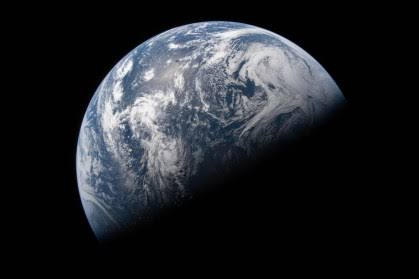

Carregando citação cósmica...

Bem-vindo à Wiki do Universo! 🌌
Você está prestes a embarcar em uma jornada pelo cosmos. Aqui reunimos conteúdos sobre astronomia, planetas, estrelas, galáxias e muito mais sobre o espaço infinito.
- 8Planetas
- 1Sol
- ∞Estrelas
Comece sua exploração:
Explore a seção do Sistema Solar ou consulte a
Wikipédia sobre astronomia.